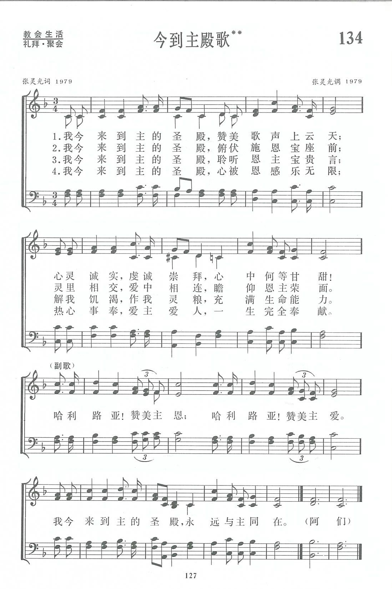

|
|
|
|
|
第134首《今到主殿歌》 |
|
https://www.zanmeishige.com/tab/13807.html?songbook=1&index=134
 |
|
|
|
|
第134首 今到主殿歌** _张灵光 Now I come to the holy temple
经文：“我且要住在耶和华的殿中，直到永远”(诗23：6)。
1987年7月19日，杭州的张灵光牧师被主接去。但他所留下的这一首《今到主殿歌》，却不知激励了多少人在主的殿里敞开心灵，献上赞美。
张灵光生于1925年，浙江省仙居县人，父亲是牧师。他从小喜欢唱诗，常与父母及十个兄弟姊妹在一起赞美神恩；他熟读圣经，十几岁时就会讲道。年青时，他因逃避抓壮丁，只身离家．所到之处总不忘参加主的事工，并写赞美诗，在信徒中传唱，可惜这些诗在“文革”时期都失散了。他1948年蒙召奉献，1951年毕业于杭州中国神学院，以后在杭州基督教崇一堂传道，1956年被按立为牧师，曾负责杭州全市的圣歌团工作。
张灵光一生勤于学习，他除了钻研圣经外，曾自学希腊文初级课程；他经常阅读有关汉语、自然科学、特别是音乐方面的书籍。因此他虽未有机会受高等教育或专业的音乐训练，却能写诗歌词曲，自弹自唱。
十年动乱期间，张灵光遭到难以忍受的迫害与折磨，健康被严重摧残，酿成慢性肝疾，身体极为虚弱。但他凭着对主的信心，坚强地挺了过来，一颗爱主的心始终不变。
乌云过去后，1979年9月23日，杭州基督教鼓楼堂举行复堂感恩礼拜，由张灵光主领。他回忆那天的情景，写下了这样一段文字：“信徒们怀着喜悦的心情，涌进礼拜堂。男女老青，济济一堂，连过道走廊也站满了人。有的喜乐得笑容满面，有的激动得热泪盈眶，大家以恭敬虔诚的心崇拜神。我在台上看到这种场面，真是心潮澎湃，感慨万分。回忆往事，看看今天，在神奇妙的大能下，我们又可以进到圣殿尽情歌颂神，祷告主，聆听圣经恩言，心灵是何等的喜乐呀!我沉浸在主慈爱、幸福的暖流之中，内心充满了平安欢乐。圣灵的启示逐渐形成了赞美的歌词和歌颂的音符，从我的心底里涌了出来，这就是《今到主殿歌》。”
明白了上述创作背景，我们就能更加领会作者在诗中对崇拜所作的描绘：“赞美歌声上云天”，“心被恩感乐无限”等都不是空洞的字句，而是中国基督徒经过死荫的幽谷以后，重新讲入圣殿的荣耀见证，抒发了信徒参加崇拜后，心灵与神合一的喜乐与满足。
1981年11月，张灵光看《天风》上登出征集创作诗歌通知后，很快便寄来他自编词曲的赞美诗数首，而且极其谦逊地表示欢迎修改，如果录用，不必付酬。尽管当时作者尚未详细说明他的创作动机，他的经历大家都是知道的。但这些诗歌中既无受苦自怜又无尽忠自傲的痕迹，所流露的只有最朴素而又真诚的赞美。经过编辑同工讨论，选中了《今到主殿歌》这一首。
原诗并无副歌，为了更能表达放声赞美的心情，经征得作者同意，把他所作的另一首诗歌中“哈利路亚赞美主恩，哈利路亚赞美主爱”的词曲并入这首，作为副歌，曲调上亦作了相应的发展。
张灵光在复堂以后，拖着病体继续参加各种圣工，探访老同工、讲道、在神学院教圣乐；曾任浙江省基督教协会的副总干事，杭州市三自副主席，天水堂主任牧师。他确实做到诗中的誓愿“一生完全奉献”。他的妻子黄文君牧师写道：“现在每当我们全家唱起《今到主殿歌》时，仿佛觉得他正在乐园里和我们一起高唱，赞美父神，声音还是那么宏亮，那么亲切，那么感人……”
这首诗流传较广，林声本(简历参阅第47首)牧师又把它编成唱诗班适用的圣歌，登载在《圣歌选集》第一集。
http://www.qingdaochurch.com/newsa_detail.asp?AutoID=764